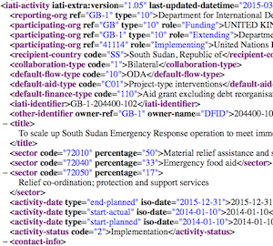
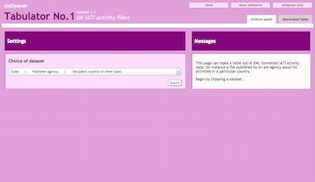
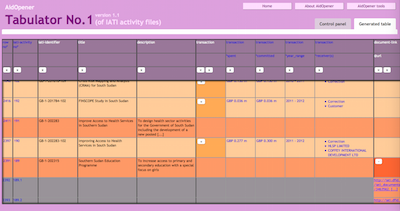

Version 1.1 of AidOpener's Tabulator No.1 is released for public use on 16 April 2015.
 You type in the name of a country or an aid agency. The search box shows names of the relevant IATI activity files. You select one and click the ‘submit’ button. A program fetches the file from the IATI Datastore, extracts the data from the computerese, and lays it out in a table for you to explore and customize. It could be your most interesting map of an aid programme so far.
You sometimes wonder if aid agencies are really doing good work. You hear some heartening and exciting stories about aid, but also appalling tales of corruption, wasted money and nasty side-effects. You suspect that donor and other organizations restrict sight of those activities which carry a risk of failure or controversy. They will continue to do so unless there is a clear and publicly monitored framework for reporting.
IATI begins to provide such a framework. IATI is the International Aid Transparency Initiative. It creates a standard in which governments and aid agencies should publish information on the aid they handle. Most of the world’s countries – and many other aid agencies – have committed themselves to systematic publishing by December 2015. But which of them have begun to honour this pledge? What is the quality of the information they are providing? And what do we learn about their aid projects? We should want to know.
AidOpener’s new tabulator is a tool that can help us begin to find out. Try it. Although it can reach all of the IATI activity data – a huge and imperfect mass – it helps your eye to pick things out, make comparisons, and spot clues for investigating deeper.
To be sure, other tools are available elsewhere. But we think many people will find this one particularly useful.
(A word of warning: Being in its first version, the Tabulator is flawed. It does not work in the Safari browser, for instance. We will try to improve it over time, as well as adding more features and tools to the kit.)